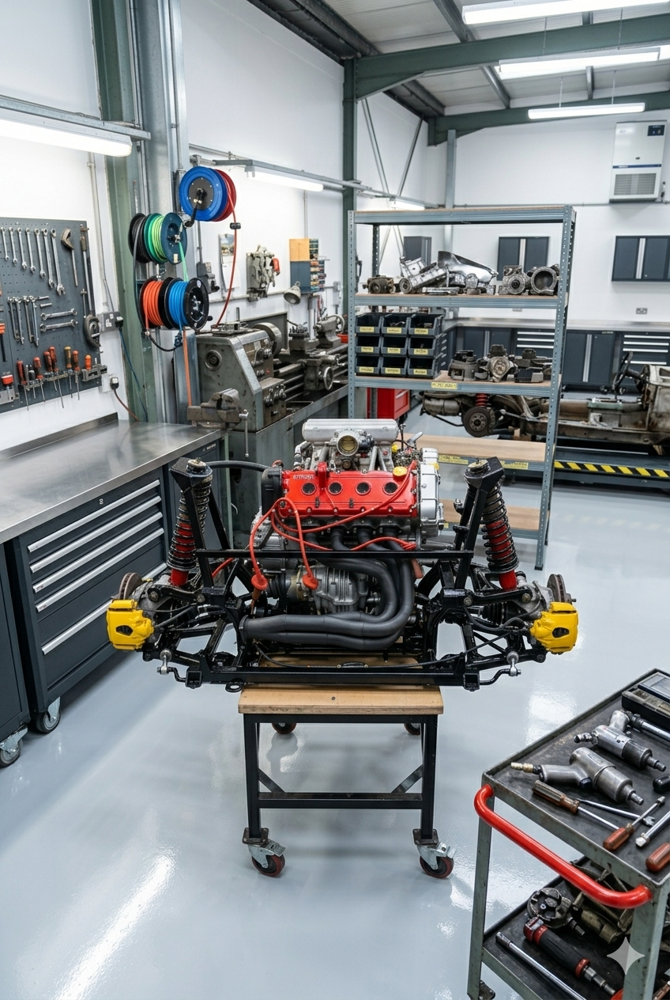
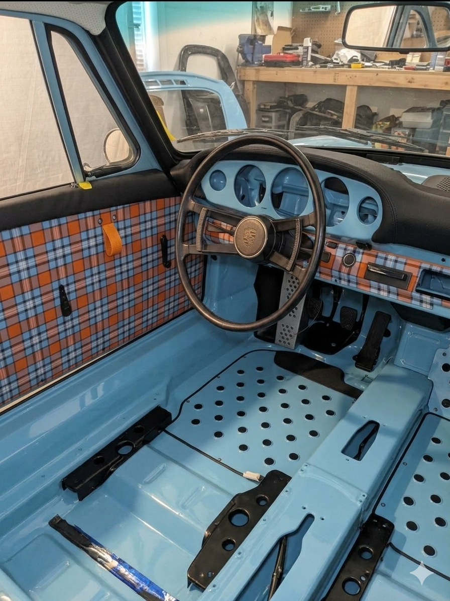
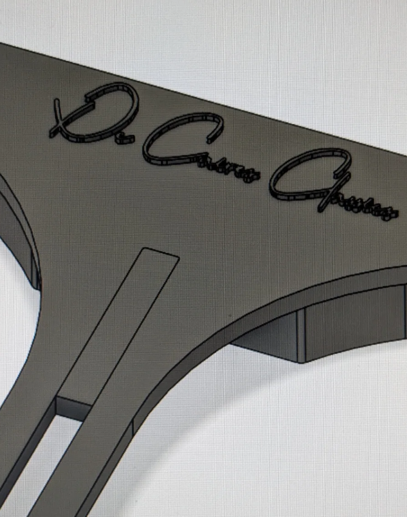

What we do
Each restoration begins with a conversation. We need to understand the car's history, its condition, and what the owner is hoping to achieve, before any work begins.
01
We cover the full range of mechanical work: routine maintenance and servicing, fault diagnosis and repair, engine rebuilds, gearbox rebuilds, and suspension rebuilds.
For owners who want more from their cars, we carry out tune-ups, performance upgrades, and racing modifications. Road use or track use, we set the car up for how it will actually be driven.

02
We strip the body to bare metal, re-preparing chassis and panels from scratch before any work builds up. Structural repairs, fabrication, and metalworking correct whatever the car needs at foundation level.
Re-chroming restores the brightwork. Body panels and accessories are refitted with care for fit and alignment.
The paintwork is the result of all that preparation. We carry out full resprays and paint repairs, matched to period colours where required. When it is done, the finish is indistinguishable from new.
03
Upholstery, door cards, carpeting, headlining, and dashboard restoration. We work with period-correct materials where possible: the right leather, the right cloth, the right finish for the car and its era.
An interior tells you as much about a restoration's quality as the paint does. It is not a detail to address at the end, but a discipline in itself.

04
Custom modifications, sympathetic upgrades, one-off engineering work. We have worked on motorcycles as well as cars: custom builds, engine swaps, and modifications that require fabrication from scratch.
If you have a project that does not fit a standard category, bring it to us. The first conversation costs nothing. If we can help, we will tell you how. If we cannot, we will tell you that too.
05
Parts for classic cars go out of production. A rubber grommet, a trim clip, a bracket: components that held a car together in 1968 and have not been manufactured since. Sourcing them through specialists takes months and costs disproportionately. Sometimes they do not exist at any price.
Umberto designs replacements in CAD, working from original drawings where they exist or from physical measurement where they do not, and produces them in-house on a 3D printer. The results are tested and refined until they are right.
Small components, exactly reproduced. A problem that used to stop a restoration cold, solved.

Consultations by appointment. Based in the Maremma, available across Tuscany and beyond.